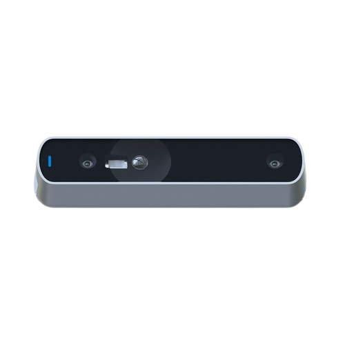

O serviço é utilizado para aqueles que procuram idealizar sua rotina de forma futurística, tornando o Teletransporte uma opção ideal para o cliente.
|
Nosso propósito?
|
|
A principal função do Scanner, é separar os objetos vivos que serão teletransportados.
Através de uma IA/API, é possível definir o local de teletransporte, a partir do escaneamento
facial/corporal pelo infravermelho. O dispositivo pode ser carregado por carregadores USB-C, e tem a 12000 mAh, equivalente a incríveis 26 dias de duração de bateria devido a sua autonomia que torna o Scanner da MoveTec, totalmente econômico. |  |
Com o processo do teletransporte, o corpo material suportado, seria levado a um destino especifico. De
maneira simplificada, em pontos/estações de teletransporte únicas!
Basicamente de forma simplificada, cada scanner terá a função, indexada na API, identificando no sistema
o endereço do terminal, executando a informação no banco de dados entre o Scanner e o local que será
teleportado. E assim, o teletransporte acontece!
A partir do destino localizado, a alocação de espaço e tempo são de formas instantâneas!
Garantido a segurança dos clientes e usuários do produto, o Scanner utiliza o sistema de API inteligente para suprir as necessidades.
As funções que fazem o Scanner ser exclusivo é devido a seu captador de infravermelho.
Localizado ao centro do Scanner, o infravermelho é capaz de captar com alta precisão, todos os dados do
usuário.
O principal beneficio que podemos ter com a nossa maquina é a dimuinição de
veiculos, causando a
redução de gases danosos ao nosso meio ambiente, poluição e mineração de metais essenciais para a
natureza. Os principais beneficios incluidos no produto são:
Não precisar enfrentar transito, diminuindo o stress populacional, diminuição de acidentes no
transito, e melhor funcionamento da cidade como um todo ja que as rodovias estariam mais
livres.
|
|
Sim, é seguro.
Não, não é possível. O scanner apenas leva até terminais específicos, em locais especificos.
Apenas nos centros de cada bairro popular existe um terminal, portanto apenas lá que é possivel se teleportar.
É possível apenas para acessórios que estarão juntos ao corpo teletransportado.